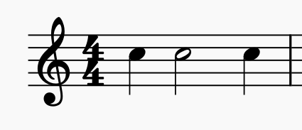
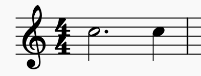
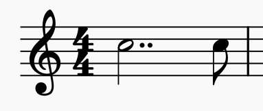
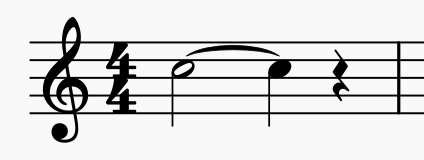
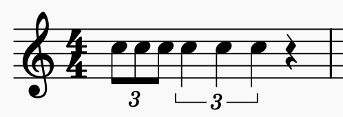
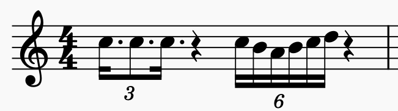

Intervalli, accordi, cadenze, modulazioni e forme musicali: qui le regole diventano meccanismi da capire e usare.
Un intervallo è la distanza tra due note. Si misura in semitoni (la più piccola distanza tra due note consecutive) e si identifica con il numero che rappresenta le note coinvolte (2ª, 3ª, 4ª, ecc.).
Le due note suonano una dopo l'altra. Creano una linea melodica.
Le due note suonano contemporaneamente. Creano un accordo semplice.
| Intervallo | Semitoni | Qualità | Esempio |
|---|---|---|---|
| Unisono | 0 | Perfetto | Do - Do |
| 2ª | 1-2 | Minore / Maggiore | Do - Re♭ / Do - Re |
| 3ª | 3-4 | Minore / Maggiore | Do - Mi♭ / Do - Mi |
| 4ª | 5 | Perfetto | Do - Fa |
| 5ª | 7 | Perfetto | Do - Sol |
| 6ª | 8-9 | Minore / Maggiore | Do - La♭ / Do - La |
| 7ª | 10-11 | Minore / Maggiore | Do - Si♭ / Do - Si |
| 8ª | 12 | Perfetto | Do - Do (acuto) |
Partendo da una nota, gli intervalli ascendenti seguono un ordine prevedibile: Unisono → 2ª → 3ª → 4ª → 5ª → 6ª → 7ª → 8ª
Allenati a riconoscere gli intervalli sul pentagramma con difficoltà progressiva e modalità classificata.
Un accordo è una combinazione di 3 o più note diverse suonate insieme. La triade è l'accordo più comune e consiste in 3 note: fondamentale, terza e quinta.
Fondamentale + 3ª maggiore + 5ª giusta
Caratteristica: Suono luminoso, allegro
Fondamentale + 3ª minore + 5ª giusta
Caratteristica: Suono scuro, malinconico
Fondamentale + 3ª minore + 5ª diminuita
Caratteristica: Suono tenebroso, inquieto
Fondamentale + 3ª maggiore + 5ª eccedente
Caratteristica: Suono strano, esoterico
Maggiore: Fondamentale + 4 semitoni + 3 semitoni = suono allegro
Minore: Fondamentale + 3 semitoni + 4 semitoni = suono triste
Diminuito: Fondamentale + 3 semitoni + 3 semitoni = suono instabile
Eccedente: Fondamentale + 4 semitoni + 4 semitoni = suono strano
Un accordo può avere diverse disposizioni cambiando quale nota è alla base. Quando la fondamentale è al basso, l'accordo è in posizione fondamentale. Se cambia la nota più bassa, otteniamo i rivolti.
La fondamentale è al basso
La terza è al basso
La quinta è al basso
Posizione Fondamentale: C (do) oppure C/C
1º Rivolto: C/E (Do su Mi)
2º Rivolto: C/G (Do su Sol)
La nota dopo lo slash indica la nota al basso.
La tonalità minore ha tre forme diverse, ognuna con caratteristiche specifiche. Tutte derivano dalla scala minore naturale, ma aggiungono alterazioni per motivi armonici e melodici.
Schema: T - S - T - T - S - T - T
(T = tono, S = semitono)
La minore naturale:
La - Si - Do - Re - Mi - Fa - Sol
Caratteristica: Suono puro e naturale, il più usato in musica popolare
Schema: T - S - T - T - S - 3S - S
(il VII grado è innalzato di un semitono)
La minore armonica:
La - Si - Do - Re - Mi - Fa - Sol♯
Caratteristica: Crea accordi di dominante ricchi, suono esotico e orientale
Schema ascendente: T - S - T - T - T - T - S
(VI e VII grado innalzati in salita)
La minore melodica (ascendente):
La - Si - Do - Re - Mi - Fa♯ - Sol♯
Caratteristica: Scorre bene melodicamente, come la scala maggiore
| Forma | VII grado | VI grado | Uso principale |
|---|---|---|---|
| Naturale | Bemolle | Bemolle | Melodia e armonia pura |
| Armonica | Naturale ♯ | Bemolle | Accordi di dominante ricchi |
| Melodica | Naturale ♯ | Naturale ♯ | Melodia fluente, assenza di 2ª eccedente |
Per allenarti su tutte le scale maggiori, minori naturali, armoniche e melodiche, apri il gioco e attiva Pro.
Il circolo delle quinte mostra la relazione tra tutte le tonalità: andando in senso orario si procede per quinte ascendenti e si aggiunge un diesis; andando in senso antiorario si aggiunge un bemolle.
Ogni tonalità maggiore ha la sua relativa minore: condividono la stessa armatura di chiave.
Una cadenza è una progressione di accordi che conclude una frase musicale, creando un senso di conclusione o sospensione. Le cadenze sono elementi fondamentali della forma musicale e della grammatica armonica.
V → I (Dominante → Tonica)
In Do maggiore:
Sol (V) → Do (I)
Effetto: Conclusione forte e definitiva
IV → I (Sottodominante → Tonica)
In Do maggiore:
Fa (IV) → Do (I)
Effetto: Conclusione dolce, quasi liturgica (Amen cadence)
IV → V → I
In Do maggiore:
Fa (IV) → Sol (V) → Do (I)
Effetto: Conclusione completa e armonica
V → V oppure I → V
La melodia termina sulla dominante (V)
Effetto: Sospensione, mancanza di risoluzione
V → VI (Dominante → Sopratonica minore)
In Do maggiore:
Sol (V) → La (VI minore)
Effetto: Inaspettato, crea sorpresa
I → IV oppure I → V
Simile alla sospesa, ma parte da tonica
Effetto: Conclusione intermedia, invita a continuare
I - IV - V - I: Progressione classica (Es: "Let it Be" dei Beatles)
vi - IV - I - V: Progressione molto moderna (Es: "Pachelbel Canon")
I - V - vi - IV: Pop progressione (Es: molte canzoni moderne)
Sperimenta con queste per capire come suonano diverse sequenze!
Una modulazione è il cambio di tonalità durante un brano musicale. Non è un cambio casuale: avviene attraverso accordi comuni, note comuni (modulazioni diatoniche) o progressioni armoniche che preparano la nuova tonalità.
Si usa un accordo che appartiene a entrambe le tonalità
Es: In Do Maggiore, l'accordo di Fa Maggiore (IV) è anche il I grado della nuova tonalità (Fa Maggiore)
Effetto: Fluida e naturale
Una nota rimane ferma mentre gli altri accordi cambiano
Es: La nota Do rimane mentre gli accordi intorno cambiano tonalità
Effetto: Elegante e quasi impercettibile
Si introduce l'accordo di dominante (V) della nuova tonalità
Es: Per modulare a Sol, introduciamo Re 7 (V della nuova tonalità)
Effetto: Evidente ma naturale
Si usa una settima dominante per preparare il cambio
Es: Sol 7 (V7 in Do) prepara a Fa come nuova tonica
Effetto: Drammatica e consapevole
Modulazione vicina: A tonalità relative, a tonalità a una quinta di distanza (suono naturale)
Modulazione lontana: A tonalità distanti nel circolo delle quinte (suono più drammatico)
Modulazione enarmonica: Usa lo stesso accordo scritto diversamente (Es: Do♯ = Re♭)
Oltre alle figure base, la musica utilizza elementi ritmici avanzati come sincopi, terzine, punti di valore e legature per creare movimento, tensione e varietà ritmica.
Una nota inizia in un tempo debole e si prolunga sul tempo forte, creando tensione ritmica.

La sincope è molto usata nel jazz, funk, pop moderno e musica latina.
Il punto aumenta la durata della nota della metà del suo valore.

Minima puntata: 2 + 1 = 3 tempi
Quarto puntato: 1 + ½ = 1½ tempi
Ottavo puntato: ½ + ¼ = ¾ tempi
Il secondo punto aumenta la durata primo punto della metà del suo valore.

Minima con doppio punto: 2 + 1 + ½ = 3½ tempi
Una curva unisce due note della stessa altezza, sommando le loro durate.

Minima + Semiminima: 2 + 1 = 3 tempi
La seconda nota non viene riattaccata: il suono continua senza interruzione.
Una terzina divide il tempo in 3 parti uguali invece di 2.

Terzina di ottavi: 3 ottavi nel tempo di 2 ottavi
Terzina di quarti: 3 quarti nel tempo di 2 quarti

Sincope + Terzina
Figure puntate dentro terzine
Sestine: 6 note nel tempo di 4
Poliritmie moderne
Esercitati battendo il tempo con il piede mentre leggi sincopi, terzine e figure puntate. La coordinazione tra pulsazione regolare e ritmo complesso è fondamentale nella musica avanzata.
Gli abbellimenti sono note aggiuntive che decorano la melodia. Non fanno parte dell'armonia strutturale, ma arricchiscono il suono e l'espressione.
Una nota breve non accentata prima della nota principale
Si scrive con una nota piccola con una sbarretta
Effetto: Grazia, leggerezza
Una nota dissonante accentata che si risolve
Crea tensione e movimento melodico
Effetto: Drammaticità, sospensione
La nota principale alternata con la nota sopra o sotto, molto rapidamente
Es: Do - Re - Do (mordente superiore)
Effetto: Vivacità, scintillio
Alternanza prolungata tra la nota e quella sopra
Tipico del barocco (Bach, Handel)
Effetto: Brillantezza, virtuosismo
Nota sopra, principale, nota sotto, principale (4 note veloci)
Es: Re - Do - Si - Do
Effetto: Eleganza, fluidità
Scorrimento di tutte le note tra due altezze
Freccia che unisce le due note
Effetto: Scorrevolezza, talvolta comico
Passaggio leggero tra due note
Non tutte le note intermedie, solo la transizione
Effetto: Morbidezza
Un simbolo sopra la nota che prolunga il valore a piacere
U rovesciata sopra la nota
Effetto: Pausa drammatica, respiro
Gli abbellimenti variano in interpretazione a seconda dell'epoca (Barocco, Classico, Romanticismo). Un trillo barocco suona diverso da uno romantico! Leggi sempre il periodo della composizione.
La forma musicale è la struttura complessiva di un brano. Descrive come sezioni melodiche si combinano per creare un tutto coerente. Le forme sono come le "architetture" della musica.
Due sezioni diverse, ciascuna solitamente ripetuta
Tre sezioni: prima, contrasto, ritorno alla prima
Ritornello che alterna con episodi diversi
3 parti: Esposizione (tema 1 + tema 2), Sviluppo, Riesposizione
Un tema base ripetuto con modifiche progressive
Raccolta di movimenti (danze, caratteri) senza legame armonico
Es: Allemanda, Corrente, Sarabanda, Giga (Barocco)
Musica classica: Sonata, Concerto, Sinfonia (movimenti multipli)
Musica pop/rock: Verso-Ritornello-Verso-Ponte-Ritornello (modificazione di ABAB)
Barocco: Suite, Rondò, Tema e Variazioni
Jazz: Blues 12 battute, AABA (32 battute)
Forma Sonata: 1º movimento di una Sinfonia Mozart o Beethoven
Tema e Variazioni: "Le Variazioni Diabelli" di Beethoven
Rondò: "Marcia alla Turca" Mozart
ABA (Ternaria): Molti Lieder romantici